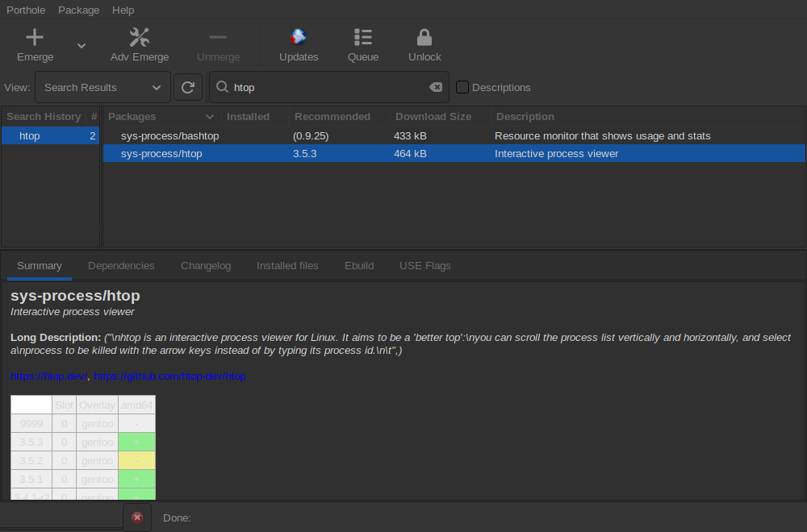

Figure 2 Ebuild Table.

A word about GUI interfaces: depending on the windowing system and theme you have installed, the colours and icons used by Porthole may differ radically from this help manual. So if the illustrations in this manual don't look EXACTLY like yours, try to be open minded about it. Also continuing development may outpace the updates to the pictures used.
Some of the built-in features include:
The main window (figure 1) is divided into a menu bar, a tool bar, category list pane, package list pane and a tabbed package info pane.

Figure 1. Porthole's Main windowThe menu bar has three menus: Porthole, Package and Help. When plugins are installed, their menu appears before Help.
Porthole runs as you. It asks for your password only when you approve a change: starting an update or install, removing a package, or marking news read.
Right-clicking a package in the package list offers the same actions, plus Change USE flags for installed packages.
The view selector let's you choose between the following views:
Enter a fragment of text in the input box next to the find button. Clicking the find button or pressing enter will start the search. The system will automatically switch to the Search results view when the search is complete. The search engine will find any occurrence of the selected text in package names.
This pane hold the portage library tree. The categories and subcategories are sorted alphabetically. Clicking on the device beside the package category will expand the tree to reveal the sub levels. Selecting the sub category will cause the package view pane to be populated with the individual packages.
This window displays a list of packages depending on the currently selected view. The columns indicate, from left to right: the name of the package, the installed version number (if any), the version that portage recommends installing, the size of files to be downloaded, and a short description of the package. In the "Updates Available" view the recommended version is the one the update plan installs, and there is also a column of checkboxes for choosing packages to update with Package → Update Packages.
In all views except the "Updates Available" view, there will be an icon beside the name of installed packages. Packages in your "world" file (those explicitly installed by you) will be marked in bold type, while packages that portage recommends updating will by default be marked in blue, and those portage recommends downgrading marked in red.
The summary tab (figure 4) gives you a quick overview of the selected packages latest version only. Note this may vary from what you have installed or want installed. The summary includes:
The table of available versions (figure 2) follows approximately the same format as that used on packages.gentoo.org. Stable packages are shown in green with a "+" symbol. Keyword masked packages (those not yet deemed stable) are shown in yellow with a "~" symbol. Hard masked packages (those with known problems) are shown in red with an additional "M". The ebuild versions are now clickable and will set all other information displayed to use that version for display. The Overlay column will display a Y/N of whether it is from a local overlay, hovering over the entry will bring up a tooltip of the path the the overlay where this ebuild is located.
If
you have already emerged the package, the emerged version or versions
will be shown in blue. In addition, if you have modified your
package.keywords file to un-mask a version, its "~" will change to
"(+)" to indicate that it was keyword masked but may now be installed.
Similarly, if unmasked by your package.unmask file any entries with
"M?" will be changed to "[?]". So for example a highly unstable version
of a package, unmasked by both package.keywords and package.unmask
would change from displaying "M~" to displaying "[(+)]".
This tab lists the packages that must be installed in order to install your selected package (figure 3). Items in this list that are already satisfied will be marked with your theme's "Yes" icon (normally a green circle). Items that are not satisfied and will also need to be installed are marked with your theme's "No" icon (normally a red circle).
When a dependency is marked as "Using" or "Not Using" (for example "Using png" in the screenshot to the right), this refers to dependencies that are only necessary if the specified Use Flag 1 is enabled or disabled, respectively. If this condition isn't met, the dependencies will be ignored, and the icon is changed to your theme's "Remove" icon (normally a horizontal line).
There are now several columns of information listed about the specific dependency that aid you in determining any needed config changes such as keyword unmasking. The dependency is also double-clickable which will bring up a popup window of that package's details like the one you are already viewing.


The dependency viewer (figure 4) is a popup window that contains all the same package if information as the main porthole window. It too can have a popup depency window for any of it's dependecies. Only one dependency popup window is allowed per window, so double-clicking a different depency will change the displayed info in it's viewer.

If available, the change log text (figure 5) is shown here. This is a good resource to use to help decide if you want to update/install it or not. Look here for information on bug fixes and new features. The text is now custom highlighted to make it easier to find and identify the information you are seeking. The bug #'s are also click-able to open you browser to the bugzilla bug at bugzilla.gentoo.org.

A list of all the files this version installed. (figure 6) This can be useful for a number of reasons. For example: the name of the executable binary file of that cool sounding utility you just installed which is completely different from the package name and was not mentioned in the release notes.
Here you can view the raw ebuild file (the script that will be used by Emerge to install the package).